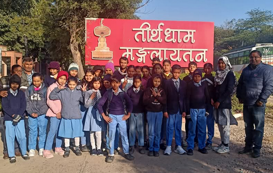

Teerthdham Mangalayatan' complex is considered one of the largest Jain religious
centres of its kind in the country. It is the auspiciousness of tirthankar lord mahavir, infinit
teerthankara, five supereme beings, lord manscript, Pujya Gurudev his follower Champaben and with
the help of great personalities that the built teerthdham mangalayatan is a meditatory land of the
followers of truth. This place is not personalized but it belongs to everyone to everyone.
Mangalaytan is ending preaches of omniscience to every person.
Our teacher took the children here on Mahavirji's birth anniversary so that by seeing this place
they could learn something new and through this they could know something new.